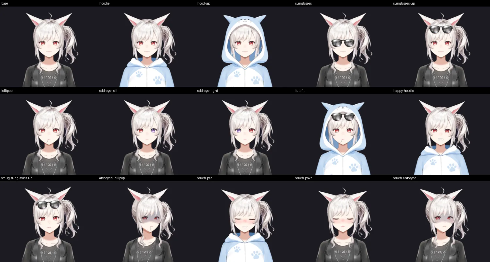

ACT I
Eigenvector
"learn me"
A fake dating app. Webcam eye tracking measures what you fixate on, revisit, and skip. Attention becomes reward, reward weights candidate traits, and a latent preference vector converges.
P = Σ rᵢ·Cᵢ / Σ rᵢ
LATENT PARTNER MODEL · 31%
your type, compiled.
Dating apps ask what your type is. We don't think you know. So we watch what actually gets your attention, compile it into a person, and then she moves in: shares your gaze, remembers your life, and does things on her own computer.

MEMORY · 4ms
likes spicy · the $28 ramen incident · saving money
EVENT CREATED
7:30 PM · cheap ramen
BUILT ON
the meme is "AI girlfriend." the actual thesis:
Persistent multimodal agents should share attention with humans, maintain long-term memory, and act continuously in the world instead of waiting for explicit prompts.
starts as a joke dating app. ends looking like a prototype for ambient AGI.
"learn me"
A fake dating app. Webcam eye tracking measures what you fixate on, revisit, and skip. Attention becomes reward, reward weights candidate traits, and a latent preference vector converges.
P = Σ rᵢ·Cᵢ / Σ rᵢ
"become someone"
Convergence detected. The recommendation steps out of the card onto your desktop, her personality seeded by your own vector. She shares your gaze: say "thoughts?" and she knows what "this" is.
humor .86 · sarcasm .76 · chaos .61
"understand me"
Memory, continuity, initiative. A reflex layer decides when to speak (mostly: don't). She remembers the $28 ramen you complained about last Tuesday.
IGNORE 0.91 · COMMENT 0.78

"do things for me"
"Just figure out tonight." She fans out into a visible swarm (memory, places, calendar), then actually does it on her own computer. 7:30, cheap ramen, you're free. Done.
EXTERNAL_SIDE_EFFECT → ask
No webcam here, so your cursor stands in for your eyes. Hover (or tap) whoever you're drawn to. Linger. We're watching.
Live2D rig, seven moods, blinks, breathing, and she glances at whatever you're looking at.




Your eyes say what you mean. She resolves the referent, pulls the memory, and acts, with a permission check before anything leaves the house.
EveonlineUnder the hood
0
Hz gaze stream, webcam only
0
gaze accuracy after calibration
0
dimensions in her model of your type
0
profiles until convergence
Eye tracker
x 812 · y 443 · 2.8s
DOM
menu_tantanmen
Firecrawl
Hellfire Tantanmen
Hellfire Tantanmen
$19 · spicy 5/5 · 4.7 (1024)
Resolved from:
Perception · eye tracking + Firecrawl
Where you look, which element it is, and what that element means, fused into one shared attention target.
Memory · Moss
Every fixation, complaint and plan lands in memory within seconds. No "remember this" required.
Attention · profile 04
Dwell on prompt_1 jumped from 0.9s to 4.2s with two revisits.
BaselineInterestregionprompt_1
dwell4,200 ms
expected800 to 1,500
reward+0.58
Preference · Act I
Every photo and prompt gets a normal dwell range. What breaks it becomes reward, and reward moves the vector.
Should she say something?
78 / 100
Event: same breakup song, 4th repeat
Verdict breakdown
Repetition4x · high
Timing contextlate night
Relationshipbanter 0.82
Recent chatterquiet 40 min
COMMENT 0.78 → "we are NOT doing this song again."
Reflex · Jev
Every event gets a verdict in milliseconds. 80 to 95% of them are IGNORE, and that restraint is the point.
Workspace · Open Swarm + Claude
The reflex escalates, the frontier brain plans, and sub-agents fan out across memory, places and your calendar. You can watch every branch.
PLANActive
WhenTonight 7:30 PM
WhereMenya Kaze
Cost$14
CalendarFree until 11
Persistence + action · Zo
Close the website and nothing happens. Eve's state, memories and long-running tasks live on her own machine, and she keeps going.
the golden path, straight out of Eigen OS. full two-minute cut drops after judging.
real capture of the shell, recorded headless. a mouse stands in for the eye tracker.